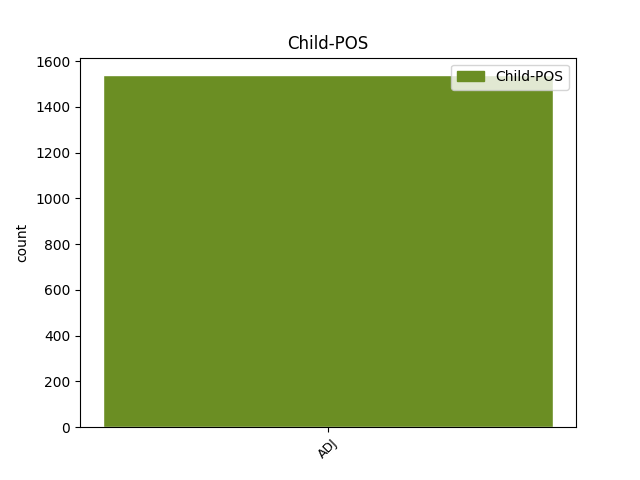

Distribution of features within this leaf

Agreement Rules sorted by frequency.
- When the dependent token is the conjunct(conj) of the head token, and the head token is ADJ and the dependent token is ADJ.
1 Sit _ _ _ _ 0 _ _ _
2 ergo _ _ _ _ 0 _ _ _
3 hic _ _ _ _ 0 _ _ _
4 sermo _ _ _ _ 0 _ _ _
5 in _ _ _ _ 0 _ _ _
6 quo _ _ _ _ 0 _ _ _
7 Socratici _ _ _ _ 0 _ _ _
8 maxime _ _ _ _ 0 _ _ _
9 excellunt _ _ _ _ 0 _ _ _
10 lenis lenis ADJ A- Case=Nom|Degree=Pos|Gender=Masc|Number=Sing 0 _ _ _
11 minime _ _ _ _ 0 _ _ _
12 que _ _ _ _ 0 _ _ _
13 pertinax pertinax ADJ A- Case=Nom|Degree=Pos|Gender=Masc|Number=Sing 10 conj _ ref=1.134
14 insit _ _ _ _ 0 _ _ _
15 in _ _ _ _ 0 _ _ _
16 eo _ _ _ _ 0 _ _ _
17 lepos _ _ _ _ 0 _ _ _
1 Quidam _ _ _ _ 0 _ _ _
2 autem _ _ _ _ 0 _ _ _
3 ad _ _ _ _ 0 _ _ _
4 eas _ _ _ _ 0 _ _ _
5 laudes _ _ _ _ 0 _ _ _
6 quas _ _ _ _ 0 _ _ _
7 a _ _ _ _ 0 _ _ _
8 patribus _ _ _ _ 0 _ _ _
9 acceperunt _ _ _ _ 0 _ _ _
10 addunt _ _ _ _ 0 _ _ _
11 aliquam aliquis ADJ Px Case=Acc|Gender=Fem|Number=Sing 0 _ _ _
12 suam suus ADJ Pt Case=Acc|Gender=Fem|Number=Sing|Person=3|Poss=Yes|Reflex=Yes 11 mod _ ref=1.116
13 ut _ _ _ _ 0 _ _ _
14 hic _ _ _ _ 0 _ _ _
15 idem _ _ _ _ 0 _ _ _
16 Africanus _ _ _ _ 0 _ _ _
17 eloquentia _ _ _ _ 0 _ _ _
18 cumulavit _ _ _ _ 0 _ _ _
19 bellicam _ _ _ _ 0 _ _ _
20 gloriam _ _ _ _ 0 _ _ _
1 Quo _ _ _ _ 0 _ _ _
2 in _ _ _ _ 0 _ _ _
3 genere _ _ _ _ 0 _ _ _
4 versutissimum _ _ _ _ 0 _ _ _
5 et _ _ _ _ 0 _ _ _
6 patientissimum _ _ _ _ 0 _ _ _
7 Lacedaemonium Lacedaemonius ADJ A- Case=Acc|Degree=Pos|Gender=Masc,Neut|Number=Sing 8 mod _ ref=1.109
8 Lysandrum Lysandrus PROPN Ne Case=Acc|Gender=Masc|Number=Sing 0 _ _ _
9 accepimus _ _ _ _ 0 _ _ _
10 contra _ _ _ _ 0 _ _ _
11 que _ _ _ _ 0 _ _ _
12 Callicratidam _ _ _ _ 0 _ _ _
13 qui _ _ _ _ 0 _ _ _
14 praefectus _ _ _ _ 0 _ _ _
15 classis _ _ _ _ 0 _ _ _
16 proximus _ _ _ _ 0 _ _ _
17 post _ _ _ _ 0 _ _ _
18 Lysandrum _ _ _ _ 0 _ _ _
19 fuit _ _ _ _ 0 _ _ _
1 Sunt _ _ _ _ 0 _ _ _
2 his _ _ _ _ 0 _ _ _
3 alii _ _ _ _ 0 _ _ _
4 multum _ _ _ _ 0 _ _ _
5 dispares _ _ _ _ 0 _ _ _
6 simplices _ _ _ _ 0 _ _ _
7 et _ _ _ _ 0 _ _ _
8 aperti _ _ _ _ 0 _ _ _
9 qui _ _ _ _ 0 _ _ _
10 nihil _ _ _ _ 0 _ _ _
11 ex _ _ _ _ 0 _ _ _
12 occulto _ _ _ _ 0 _ _ _
13 nihil nihil ADJ Px Case=Acc|Gender=Neut|Number=Sing 16 subj _ ref=1.109
14 de _ _ _ _ 0 _ _ _
15 insidiis _ _ _ _ 0 _ _ _
16 agendum ago VERB V- Case=Acc|Gender=Neut|Number=Sing|VerbForm=Gdv 0 _ _ _
17 putant _ _ _ _ 0 _ _ _
18 veritatis _ _ _ _ 0 _ _ _
19 cultores _ _ _ _ 0 _ _ _
20 fraudis _ _ _ _ 0 _ _ _
21 inimici _ _ _ _ 0 _ _ _
22 item _ _ _ _ 0 _ _ _
23 que _ _ _ _ 0 _ _ _
24 alii _ _ _ _ 0 _ _ _
25 qui _ _ _ _ 0 _ _ _
26 quidvis _ _ _ _ 0 _ _ _
27 perpetiantur _ _ _ _ 0 _ _ _
28 cuivis _ _ _ _ 0 _ _ _
29 deserviant _ _ _ _ 0 _ _ _
30 dum _ _ _ _ 0 _ _ _
31 quod _ _ _ _ 0 _ _ _
32 velint _ _ _ _ 0 _ _ _
33 consequantur _ _ _ _ 0 _ _ _
34 ut _ _ _ _ 0 _ _ _
35 Sullam _ _ _ _ 0 _ _ _
36 et _ _ _ _ 0 _ _ _
37 Marcum _ _ _ _ 0 _ _ _
38 Crassum _ _ _ _ 0 _ _ _
39 videbamus _ _ _ _ 0 _ _ _
1 alterum alter ADJ A- Case=Nom|Degree=Pos|Gender=Neut|Number=Sing 2 subj _ ref=1.104
2 elegans elegans ADJ A- Case=Nom|Degree=Pos|Gender=Neut|Number=Sing 0 _ _ _
3 urbanum _ _ _ _ 0 _ _ _
4 ingeniosum _ _ _ _ 0 _ _ _
5 facetum _ _ _ _ 0 _ _ _
1 Quamvis _ _ _ _ 0 _ _ _
2 enim _ _ _ _ 0 _ _ _
3 Themistocles _ _ _ _ 0 _ _ _
4 iure _ _ _ _ 0 _ _ _
5 laudetur _ _ _ _ 0 _ _ _
6 et _ _ _ _ 0 _ _ _
7 sit _ _ _ _ 0 _ _ _
8 eius _ _ _ _ 0 _ _ _
9 nomen _ _ _ _ 0 _ _ _
10 quam _ _ _ _ 0 _ _ _
11 Solonis _ _ _ _ 0 _ _ _
12 illustrius _ _ _ _ 0 _ _ _
13 citetur _ _ _ _ 0 _ _ _
14 que _ _ _ _ 0 _ _ _
15 Salamis _ _ _ _ 0 _ _ _
16 clarissimae _ _ _ _ 0 _ _ _
17 testis _ _ _ _ 0 _ _ _
18 victoriae _ _ _ _ 0 _ _ _
19 quae _ _ _ _ 0 _ _ _
20 anteponatur _ _ _ _ 0 _ _ _
21 consilio _ _ _ _ 0 _ _ _
22 Solonis _ _ _ _ 0 _ _ _
23 ei _ _ _ _ 0 _ _ _
24 quo _ _ _ _ 0 _ _ _
25 primum _ _ _ _ 0 _ _ _
26 constituit _ _ _ _ 0 _ _ _
27 Areopagitas _ _ _ _ 0 _ _ _
28 non _ _ _ _ 0 _ _ _
29 minus _ _ _ _ 0 _ _ _
30 praeclarum praeclarus ADJ A- Case=Nom|Degree=Pos|Gender=Neut|Number=Sing 34 comp:pred _ ref=1.75
31 hoc _ _ _ _ 0 _ _ _
32 quam _ _ _ _ 0 _ _ _
33 illud _ _ _ _ 0 _ _ _
34 iudicandum iudico VERB V- Case=Nom|Gender=Neut|Number=Sing|VerbForm=Gdv 0 _ _ _
35 est _ _ _ _ 0 _ _ _
1 Quo _ _ _ _ 0 _ _ _
2 genere _ _ _ _ 0 _ _ _
3 non _ _ _ _ 0 _ _ _
4 modo _ _ _ _ 0 _ _ _
5 Plautus _ _ _ _ 0 _ _ _
6 noster _ _ _ _ 0 _ _ _
7 et _ _ _ _ 0 _ _ _
8 Atticorum _ _ _ _ 0 _ _ _
9 antiqua _ _ _ _ 0 _ _ _
10 comoedia _ _ _ _ 0 _ _ _
11 sed _ _ _ _ 0 _ _ _
12 etiam _ _ _ _ 0 _ _ _
13 philosophorum _ _ _ _ 0 _ _ _
14 Socraticorum _ _ _ _ 0 _ _ _
15 libri _ _ _ _ 0 _ _ _
16 referti _ _ _ _ 0 _ _ _
17 sunt _ _ _ _ 0 _ _ _
18 multa multus ADJ A- Case=Nom|Degree=Pos|Gender=Neut|Number=Plur 22 subj@pass _ ref=1.104
19 que _ _ _ _ 0 _ _ _
20 multorum _ _ _ _ 0 _ _ _
21 facete _ _ _ _ 0 _ _ _
22 dicta dico VERB V- Aspect=Perf|Case=Nom|Gender=Neut|Number=Plur|Tense=Past|VerbForm=Part|Voice=Pass 0 _ _ _
23 ut _ _ _ _ 0 _ _ _
24 ea _ _ _ _ 0 _ _ _
25 quae _ _ _ _ 0 _ _ _
26 a _ _ _ _ 0 _ _ _
27 sene _ _ _ _ 0 _ _ _
28 Catone _ _ _ _ 0 _ _ _
29 collecta _ _ _ _ 0 _ _ _
30 sunt _ _ _ _ 0 _ _ _
31 quae _ _ _ _ 0 _ _ _
32 vocant _ _ _ _ 0 _ _ _
33 ἀποφθέγματα _ _ _ _ 0 _ _ _
1 una _ _ _ _ 0 _ _ _
2 pars _ _ _ _ 0 _ _ _
3 in _ _ _ _ 0 _ _ _
4 appetitu _ _ _ _ 0 _ _ _
5 posita pono VERB V- Aspect=Perf|Case=Nom|Gender=Fem|Number=Sing|Tense=Past|VerbForm=Part|Voice=Pass 0 _ _ _
6 est _ _ _ _ 0 _ _ _
7 quae _ _ _ _ 0 _ _ _
8 est _ _ _ _ 0 _ _ _
9 ὁρμή _ _ _ _ 0 _ _ _
10 Graece _ _ _ _ 0 _ _ _
11 quae _ _ _ _ 0 _ _ _
12 hominem _ _ _ _ 0 _ _ _
13 huc _ _ _ _ 0 _ _ _
14 et _ _ _ _ 0 _ _ _
15 illuc _ _ _ _ 0 _ _ _
16 rapit _ _ _ _ 0 _ _ _
17 altera alter ADJ A- Case=Nom|Degree=Pos|Gender=Fem|Number=Sing 5 conj _ ref=1.101
18 in _ _ _ _ 0 _ _ _
19 ratione _ _ _ _ 0 _ _ _
20 quae _ _ _ _ 0 _ _ _
21 docet _ _ _ _ 0 _ _ _
22 et _ _ _ _ 0 _ _ _
23 explanat _ _ _ _ 0 _ _ _
24 quid _ _ _ _ 0 _ _ _
25 faciendum _ _ _ _ 0 _ _ _
26 fugiendum _ _ _ _ 0 _ _ _
27 que _ _ _ _ 0 _ _ _
28 sit _ _ _ _ 0 _ _ _
1 Erat _ _ _ _ 0 _ _ _
2 una _ _ _ _ 0 _ _ _
3 cum _ _ _ _ 0 _ _ _
4 ceteris _ _ _ _ 0 _ _ _
5 Dumnorix Dumnorix PROPN Ne Case=Nom|Gender=Masc|Number=Sing 0 _ _ _
6 Aeduus Aeduus ADJ A- Case=Nom|Degree=Pos|Gender=Masc|Number=Sing 5 appos _ ref=5.6.1
7 de _ _ _ _ 0 _ _ _
8 quo _ _ _ _ 0 _ _ _
9 ante _ _ _ _ 0 _ _ _
10 ab _ _ _ _ 0 _ _ _
11 nobis _ _ _ _ 0 _ _ _
12 dictum _ _ _ _ 0 _ _ _
13 est _ _ _ _ 0 _ _ _
1 Sed _ _ _ _ 0 _ _ _
2 si _ _ _ _ 0 _ _ _
3 contentio _ _ _ _ 0 _ _ _
4 quaedam _ _ _ _ 0 _ _ _
5 et _ _ _ _ 0 _ _ _
6 comparatio _ _ _ _ 0 _ _ _
7 fiat _ _ _ _ 0 _ _ _
8 quibus _ _ _ _ 0 _ _ _
9 plurimum _ _ _ _ 0 _ _ _
10 tribuendum _ _ _ _ 0 _ _ _
11 sit _ _ _ _ 0 _ _ _
12 officii _ _ _ _ 0 _ _ _
13 principes _ _ _ _ 0 _ _ _
14 sint _ _ _ _ 0 _ _ _
15 patria _ _ _ _ 0 _ _ _
16 et _ _ _ _ 0 _ _ _
17 parentes _ _ _ _ 0 _ _ _
18 quorum _ _ _ _ 0 _ _ _
19 beneficiis _ _ _ _ 0 _ _ _
20 maximis _ _ _ _ 0 _ _ _
21 obligati _ _ _ _ 0 _ _ _
22 sumus _ _ _ _ 0 _ _ _
23 liberi _ _ _ _ 0 _ _ _
24 tota _ _ _ _ 0 _ _ _
25 que _ _ _ _ 0 _ _ _
26 domus _ _ _ _ 0 _ _ _
27 quae _ _ _ _ 0 _ _ _
28 spectat _ _ _ _ 0 _ _ _
29 in _ _ _ _ 0 _ _ _
30 nos nos PRON Pp Case=Acc|Gender=Masc|Number=Plur|Person=1|PronType=Prs 0 _ _ _
31 solos solus ADJ A- Case=Acc|Degree=Pos|Gender=Masc|Number=Plur 30 appos _ ref=1.58
32 ne _ _ _ _ 0 _ _ _
33 que _ _ _ _ 0 _ _ _
34 aliud _ _ _ _ 0 _ _ _
35 ullum _ _ _ _ 0 _ _ _
36 potest _ _ _ _ 0 _ _ _
37 habere _ _ _ _ 0 _ _ _
38 perfugium _ _ _ _ 0 _ _ _
39 deinceps _ _ _ _ 0 _ _ _
40 bene _ _ _ _ 0 _ _ _
41 convenientes _ _ _ _ 0 _ _ _
42 propinqui _ _ _ _ 0 _ _ _
43 quibus _ _ _ _ 0 _ _ _
44 cum _ _ _ _ 0 _ _ _
45 communis _ _ _ _ 0 _ _ _
46 etiam _ _ _ _ 0 _ _ _
47 fortuna _ _ _ _ 0 _ _ _
48 plerumque _ _ _ _ 0 _ _ _
49 est _ _ _ _ 0 _ _ _
1 in _ _ _ _ 0 _ _ _
2 his _ _ _ _ 0 _ _ _
3 et _ _ _ _ 0 _ _ _
4 nobilissimi _ _ _ _ 0 _ _ _
5 philosophi _ _ _ _ 0 _ _ _
6 longe _ _ _ _ 0 _ _ _
7 que _ _ _ _ 0 _ _ _
8 principes _ _ _ _ 0 _ _ _
9 et _ _ _ _ 0 _ _ _
10 quidam _ _ _ _ 0 _ _ _
11 homines _ _ _ _ 0 _ _ _
12 severi _ _ _ _ 0 _ _ _
13 et _ _ _ _ 0 _ _ _
14 graves _ _ _ _ 0 _ _ _
15 ne _ _ _ _ 0 _ _ _
16 c _ _ _ _ 0 _ _ _
17 populi _ _ _ _ 0 _ _ _
18 ne _ _ _ _ 0 _ _ _
19 c _ _ _ _ 0 _ _ _
20 principum _ _ _ _ 0 _ _ _
21 mores _ _ _ _ 0 _ _ _
22 ferre _ _ _ _ 0 _ _ _
23 potuerunt _ _ _ _ 0 _ _ _
24 vixerunt _ _ _ _ 0 _ _ _
25 que _ _ _ _ 0 _ _ _
26 non nonnullus ADJ A- Case=Nom|Degree=Pos|Gender=Masc|Number=Plur 0 _ _ _
27 nulli nulli ADJ A- Case=Nom|Degree=Pos|Gender=Masc|Number=Plur 26 unk@fixed _ ref=1.69
28 in _ _ _ _ 0 _ _ _
29 agris _ _ _ _ 0 _ _ _
30 delectati _ _ _ _ 0 _ _ _
31 re _ _ _ _ 0 _ _ _
32 sua _ _ _ _ 0 _ _ _
33 familiari _ _ _ _ 0 _ _ _
1 quae _ _ _ _ 0 _ _ _
2 gravis _ _ _ _ 0 _ _ _
3 et _ _ _ _ 0 _ _ _
4 fortis _ _ _ _ 0 _ _ _
5 civis _ _ _ _ 0 _ _ _
6 et _ _ _ _ 0 _ _ _
7 in _ _ _ _ 0 _ _ _
8 re _ _ _ _ 0 _ _ _
9 publica _ _ _ _ 0 _ _ _
10 dignus _ _ _ _ 0 _ _ _
11 principatu _ _ _ _ 0 _ _ _
12 fugiet _ _ _ _ 0 _ _ _
13 atque _ _ _ _ 0 _ _ _
14 oderit _ _ _ _ 0 _ _ _
15 tradet _ _ _ _ 0 _ _ _
16 que _ _ _ _ 0 _ _ _
17 se _ _ _ _ 0 _ _ _
18 totum _ _ _ _ 0 _ _ _
19 rei _ _ _ _ 0 _ _ _
20 publicae _ _ _ _ 0 _ _ _
21 ne _ _ _ _ 0 _ _ _
22 que _ _ _ _ 0 _ _ _
23 opes _ _ _ _ 0 _ _ _
24 aut _ _ _ _ 0 _ _ _
25 potentiam _ _ _ _ 0 _ _ _
26 consectabitur _ _ _ _ 0 _ _ _
27 totam totus ADJ A- Case=Acc|Degree=Pos|Gender=Fem|Number=Sing 29 mod _ ref=1.86
28 que _ _ _ _ 0 _ _ _
29 eam is PRON Pp Case=Acc|Gender=Fem|Number=Sing|Person=3|PronType=Prs 0 _ _ _
30 sic _ _ _ _ 0 _ _ _
31 tuebitur _ _ _ _ 0 _ _ _
32 ut _ _ _ _ 0 _ _ _
33 omnibus _ _ _ _ 0 _ _ _
34 consulat _ _ _ _ 0 _ _ _
1 multi _ _ _ _ 0 _ _ _
2 ex _ _ _ _ 0 _ _ _
3 suis _ _ _ _ 0 _ _ _
4 finibus _ _ _ _ 0 _ _ _
5 egressi _ _ _ _ 0 _ _ _
6 se se PRON Pk Case=Acc|Gender=Masc|Number=Plur|Person=3|PronType=Prs|Reflex=Yes 0 _ _ _
7 sua suus ADJ Pt Case=Acc|Gender=Neut|Number=Plur|Person=3|Poss=Yes|Reflex=Yes 6 conj _ ref=6.31.4
8 que _ _ _ _ 0 _ _ _
9 omnia _ _ _ _ 0 _ _ _
10 alienissimis _ _ _ _ 0 _ _ _
11 crediderunt _ _ _ _ 0 _ _ _
1 Erat _ _ _ _ 0 _ _ _
2 aeger aeger ADJ A- Case=Nom|Degree=Pos|Gender=Masc|Number=Sing 5 mod _ ref=6.38.1
3 cum _ _ _ _ 0 _ _ _
4 praesidio _ _ _ _ 0 _ _ _
5 relictus relinquo VERB V- Aspect=Perf|Case=Nom|Gender=Masc|Number=Sing|Tense=Past|VerbForm=Part|Voice=Pass 0 _ _ _
6 Publius _ _ _ _ 0 _ _ _
7 Sextius _ _ _ _ 0 _ _ _
8 Baculus _ _ _ _ 0 _ _ _
9 qui _ _ _ _ 0 _ _ _
10 primum _ _ _ _ 0 _ _ _
11 pilum _ _ _ _ 0 _ _ _
12 apud _ _ _ _ 0 _ _ _
13 Caesarem _ _ _ _ 0 _ _ _
14 duxerat _ _ _ _ 0 _ _ _
15 cuius _ _ _ _ 0 _ _ _
16 mentionem _ _ _ _ 0 _ _ _
17 superioribus _ _ _ _ 0 _ _ _
18 proeliis _ _ _ _ 0 _ _ _
19 fecimus _ _ _ _ 0 _ _ _
20 ac _ _ _ _ 0 _ _ _
21 diem _ _ _ _ 0 _ _ _
22 iam _ _ _ _ 0 _ _ _
23 quintum _ _ _ _ 0 _ _ _
24 cibo _ _ _ _ 0 _ _ _
25 caruerat _ _ _ _ 0 _ _ _
1 Admodum _ _ _ _ 0 _ _ _
2 autem _ _ _ _ 0 _ _ _
3 tenenda _ _ _ _ 0 _ _ _
4 sunt _ _ _ _ 0 _ _ _
5 sua suus ADJ Pt Case=Nom|Gender=Neut|Number=Plur|Person=3|Poss=Yes|Reflex=Yes 0 _ _ _
6 cuique _ _ _ _ 0 _ _ _
7 non _ _ _ _ 0 _ _ _
8 vitiosa vitiosus ADJ A- Case=Nom|Degree=Pos|Gender=Neut|Number=Plur 5 appos _ ref=1.110
9 sed _ _ _ _ 0 _ _ _
10 tamen _ _ _ _ 0 _ _ _
11 propria _ _ _ _ 0 _ _ _
12 quo _ _ _ _ 0 _ _ _
13 facilius _ _ _ _ 0 _ _ _
14 decorum _ _ _ _ 0 _ _ _
15 illud _ _ _ _ 0 _ _ _
16 quod _ _ _ _ 0 _ _ _
17 quaerimus _ _ _ _ 0 _ _ _
18 retineatur _ _ _ _ 0 _ _ _
1 hinc _ _ _ _ 0 _ _ _
2 noster _ _ _ _ 0 _ _ _
3 Cocles _ _ _ _ 0 _ _ _
4 hinc _ _ _ _ 0 _ _ _
5 Decii _ _ _ _ 0 _ _ _
6 hinc _ _ _ _ 0 _ _ _
7 Gnaeus _ _ _ _ 0 _ _ _
8 et _ _ _ _ 0 _ _ _
9 Publius _ _ _ _ 0 _ _ _
10 Scipiones _ _ _ _ 0 _ _ _
11 hinc _ _ _ _ 0 _ _ _
12 Marcus Marcus PROPN Ne Case=Nom|Gender=Masc|Number=Sing 0 _ _ _
13 Marcellus _ _ _ _ 0 _ _ _
14 innumerabiles innumerabilis ADJ A- Case=Nom|Degree=Pos|Gender=Masc|Number=Plur 12 conj _ ref=1.61
15 alii _ _ _ _ 0 _ _ _
16 maxime _ _ _ _ 0 _ _ _
17 que _ _ _ _ 0 _ _ _
18 ipse _ _ _ _ 0 _ _ _
19 populus _ _ _ _ 0 _ _ _
20 Romanus _ _ _ _ 0 _ _ _
21 animi _ _ _ _ 0 _ _ _
22 magnitudine _ _ _ _ 0 _ _ _
23 excellit _ _ _ _ 0 _ _ _
1 ipse _ _ _ _ 0 _ _ _
2 cum _ _ _ _ 0 _ _ _
3 reliquis reliquus ADJ A- Case=Abl|Degree=Pos|Number=Plur 4 mod _ ref=6.33.3
4 tribus tres NUM Ma Case=Abl|Gender=Fem|Number=Plur 0 _ _ _
5 ad _ _ _ _ 0 _ _ _
6 flumen _ _ _ _ 0 _ _ _
7 Scaldim _ _ _ _ 0 _ _ _
8 quod _ _ _ _ 0 _ _ _
9 influit _ _ _ _ 0 _ _ _
10 in _ _ _ _ 0 _ _ _
11 Mosam _ _ _ _ 0 _ _ _
12 extremas _ _ _ _ 0 _ _ _
13 que _ _ _ _ 0 _ _ _
14 Arduennae _ _ _ _ 0 _ _ _
15 partes _ _ _ _ 0 _ _ _
16 ire _ _ _ _ 0 _ _ _
17 constituit _ _ _ _ 0 _ _ _
18 quo _ _ _ _ 0 _ _ _
19 cum _ _ _ _ 0 _ _ _
20 paucis _ _ _ _ 0 _ _ _
21 equitibus _ _ _ _ 0 _ _ _
22 profectum _ _ _ _ 0 _ _ _
23 Ambiorigem _ _ _ _ 0 _ _ _
24 audiebat _ _ _ _ 0 _ _ _
1 Omnino _ _ _ _ 0 _ _ _
2 qui _ _ _ _ 0 _ _ _
3 rei _ _ _ _ 0 _ _ _
4 publicae _ _ _ _ 0 _ _ _
5 praefuturi _ _ _ _ 0 _ _ _
6 sunt _ _ _ _ 0 _ _ _
7 duo _ _ _ _ 0 _ _ _
8 Platonis _ _ _ _ 0 _ _ _
9 praecepta _ _ _ _ 0 _ _ _
10 teneant _ _ _ _ 0 _ _ _
11 unum unus NUM Ma Case=Acc|Gender=Neut|Number=Sing 0 _ _ _
12 ut _ _ _ _ 0 _ _ _
13 utilitatem _ _ _ _ 0 _ _ _
14 civium _ _ _ _ 0 _ _ _
15 sic _ _ _ _ 0 _ _ _
16 tueantur _ _ _ _ 0 _ _ _
17 ut _ _ _ _ 0 _ _ _
18 quaecumque _ _ _ _ 0 _ _ _
19 agunt _ _ _ _ 0 _ _ _
20 ad _ _ _ _ 0 _ _ _
21 eam _ _ _ _ 0 _ _ _
22 referant _ _ _ _ 0 _ _ _
23 obliti _ _ _ _ 0 _ _ _
24 commodorum _ _ _ _ 0 _ _ _
25 suorum _ _ _ _ 0 _ _ _
26 alterum alter ADJ A- Case=Acc|Degree=Pos|Gender=Neut|Number=Sing 11 conj _ ref=1.85
27 ut _ _ _ _ 0 _ _ _
28 totum _ _ _ _ 0 _ _ _
29 corpus _ _ _ _ 0 _ _ _
30 rei _ _ _ _ 0 _ _ _
31 publicae _ _ _ _ 0 _ _ _
32 curent _ _ _ _ 0 _ _ _
33 ne _ _ _ _ 0 _ _ _
34 dum _ _ _ _ 0 _ _ _
35 partem _ _ _ _ 0 _ _ _
36 aliquam _ _ _ _ 0 _ _ _
37 tuentur _ _ _ _ 0 _ _ _
38 reliquas _ _ _ _ 0 _ _ _
39 deserant _ _ _ _ 0 _ _ _
1 duo duo NUM Ma Case=Nom|Gender=Masc|Number=Plur 0 _ _ _
2 enim _ _ _ _ 0 _ _ _
3 soli solus ADJ A- Case=Nom|Degree=Pos|Gender=Masc|Number=Plur 1 appos _ ref=1.17.11
4 dicuntur _ _ _ _ 0 _ _ _
5 petituri _ _ _ _ 0 _ _ _
1 sed _ _ _ _ 0 _ _ _
2 quid quis PRON Pi Case=Nom|Gender=Neut|Number=Sing|PronType=Int 0 _ _ _
3 plura multus ADJ A- Case=Nom|Degree=Cmp|Gender=Neut|Number=Plur 2 subj _ ref=4.19.2
1 et _ _ _ _ 0 _ _ _
2 iratae _ _ _ _ 0 _ _ _
3 sunt _ _ _ _ 0 _ _ _
4 gentes _ _ _ _ 0 _ _ _
5 et _ _ _ _ 0 _ _ _
6 advenit _ _ _ _ 0 _ _ _
7 ira _ _ _ _ 0 _ _ _
8 tua _ _ _ _ 0 _ _ _
9 et _ _ _ _ 0 _ _ _
10 tempus _ _ _ _ 0 _ _ _
11 mortuorum _ _ _ _ 0 _ _ _
12 iudicari _ _ _ _ 0 _ _ _
13 et _ _ _ _ 0 _ _ _
14 reddere _ _ _ _ 0 _ _ _
15 mercedem _ _ _ _ 0 _ _ _
16 servis _ _ _ _ 0 _ _ _
17 tuis _ _ _ _ 0 _ _ _
18 prophetis _ _ _ _ 0 _ _ _
19 et _ _ _ _ 0 _ _ _
20 sanctis _ _ _ _ 0 _ _ _
21 et _ _ _ _ 0 _ _ _
22 timentibus timeo VERB V- Case=Dat|Gender=Masc|Number=Plur|Tense=Pres|VerbForm=Part|Voice=Act 0 _ _ _
23 nomen _ _ _ _ 0 _ _ _
24 tuum _ _ _ _ 0 _ _ _
25 pusillis pusillus ADJ A- Case=Dat|Degree=Pos|Gender=Masc|Number=Plur 22 appos _ ref=REV_11.18
26 et _ _ _ _ 0 _ _ _
27 magnis _ _ _ _ 0 _ _ _
28 et _ _ _ _ 0 _ _ _
29 exterminandi _ _ _ _ 0 _ _ _
30 eos _ _ _ _ 0 _ _ _
31 qui _ _ _ _ 0 _ _ _
32 corruperunt _ _ _ _ 0 _ _ _
33 terram _ _ _ _ 0 _ _ _
1 Concilio _ _ _ _ 0 _ _ _
2 Galliae _ _ _ _ 0 _ _ _
3 primo primus ADJ Mo Case=Abl|Gender=Masc,Neut|Number=Sing 7 dislocated _ ref=6.3.4
4 vere _ _ _ _ 0 _ _ _
5 ut _ _ _ _ 0 _ _ _
6 instituerat _ _ _ _ 0 _ _ _
7 indicto indico VERB V- Aspect=Perf|Case=Abl|Gender=Neut|Number=Sing|Tense=Past|VerbForm=Part|Voice=Pass 0 _ _ _
8 cum _ _ _ _ 0 _ _ _
9 reliqui _ _ _ _ 0 _ _ _
10 praeter _ _ _ _ 0 _ _ _
11 Senones _ _ _ _ 0 _ _ _
12 Carnutes _ _ _ _ 0 _ _ _
13 Treveros _ _ _ _ 0 _ _ _
14 que _ _ _ _ 0 _ _ _
15 venissent _ _ _ _ 0 _ _ _
16 initium _ _ _ _ 0 _ _ _
17 belli _ _ _ _ 0 _ _ _
18 ac _ _ _ _ 0 _ _ _
19 defectionis _ _ _ _ 0 _ _ _
20 hoc _ _ _ _ 0 _ _ _
21 esse _ _ _ _ 0 _ _ _
22 arbitratus _ _ _ _ 0 _ _ _
23 ut _ _ _ _ 0 _ _ _
24 omnia _ _ _ _ 0 _ _ _
25 postponere _ _ _ _ 0 _ _ _
26 videretur _ _ _ _ 0 _ _ _
27 concilium _ _ _ _ 0 _ _ _
28 Luteciam _ _ _ _ 0 _ _ _
29 Parisiorum _ _ _ _ 0 _ _ _
30 transfert _ _ _ _ 0 _ _ _
1 Sed _ _ _ _ 0 _ _ _
2 quo _ _ _ _ 0 _ _ _
3 difficilius difficilis ADJ A- Case=Nom|Degree=Cmp|Gender=Neut|Number=Sing 5 dislocated _ ref=1.64
4 hoc _ _ _ _ 0 _ _ _
5 praeclarius praeclarus ADJ A- Case=Nom|Degree=Cmp|Gender=Neut|Number=Sing 0 _ _ _
1 Ut _ _ _ _ 0 _ _ _
2 enim _ _ _ _ 0 _ _ _
3 pueris _ _ _ _ 0 _ _ _
4 non _ _ _ _ 0 _ _ _
5 omnem omnis DET Px Case=Acc|Gender=Fem,Masc|Number=Sing 0 _ _ _
6 ludendi _ _ _ _ 0 _ _ _
7 licentiam _ _ _ _ 0 _ _ _
8 damus _ _ _ _ 0 _ _ _
9 sed _ _ _ _ 0 _ _ _
10 eam is ADJ Pd Case=Acc|Gender=Fem|Number=Sing 5 conj _ ref=1.103
11 quae _ _ _ _ 0 _ _ _
12 ab _ _ _ _ 0 _ _ _
13 honestatis _ _ _ _ 0 _ _ _
14 actionibus _ _ _ _ 0 _ _ _
15 non _ _ _ _ 0 _ _ _
16 sit _ _ _ _ 0 _ _ _
17 aliena _ _ _ _ 0 _ _ _
18 sic _ _ _ _ 0 _ _ _
19 in _ _ _ _ 0 _ _ _
20 ipso _ _ _ _ 0 _ _ _
21 ioco _ _ _ _ 0 _ _ _
22 aliquod _ _ _ _ 0 _ _ _
23 probi _ _ _ _ 0 _ _ _
24 ingenii _ _ _ _ 0 _ _ _
25 lumen _ _ _ _ 0 _ _ _
26 eluceat _ _ _ _ 0 _ _ _
1 Capessentibus _ _ _ _ 0 _ _ _
2 autem _ _ _ _ 0 _ _ _
3 rem _ _ _ _ 0 _ _ _
4 publicam _ _ _ _ 0 _ _ _
5 nihilo _ _ _ _ 0 _ _ _
6 minus _ _ _ _ 0 _ _ _
7 quam _ _ _ _ 0 _ _ _
8 philosophis _ _ _ _ 0 _ _ _
9 haud _ _ _ _ 0 _ _ _
10 scio _ _ _ _ 0 _ _ _
11 an _ _ _ _ 0 _ _ _
12 magis _ _ _ _ 0 _ _ _
13 etiam _ _ _ _ 0 _ _ _
14 et _ _ _ _ 0 _ _ _
15 magnificentia _ _ _ _ 0 _ _ _
16 et _ _ _ _ 0 _ _ _
17 despicientia _ _ _ _ 0 _ _ _
18 adhibenda _ _ _ _ 0 _ _ _
19 est _ _ _ _ 0 _ _ _
20 rerum _ _ _ _ 0 _ _ _
21 humanarum _ _ _ _ 0 _ _ _
22 quam _ _ _ _ 0 _ _ _
23 saepe _ _ _ _ 0 _ _ _
24 dico _ _ _ _ 0 _ _ _
25 et _ _ _ _ 0 _ _ _
26 tranquillitas _ _ _ _ 0 _ _ _
27 animi _ _ _ _ 0 _ _ _
28 atque _ _ _ _ 0 _ _ _
29 securitas _ _ _ _ 0 _ _ _
30 siquidem _ _ _ _ 0 _ _ _
31 ne _ _ _ _ 0 _ _ _
32 c _ _ _ _ 0 _ _ _
33 anxii anxius ADJ A- Case=Nom|Degree=Pos|Gender=Masc|Number=Plur 34 comp:pred _ ref=1.72
34 futuri sum AUX V- Case=Nom|Gender=Masc|Number=Plur|Tense=Fut|VerbForm=Part|Voice=Act 0 _ _ _
35 sunt _ _ _ _ 0 _ _ _
36 et _ _ _ _ 0 _ _ _
37 cum _ _ _ _ 0 _ _ _
38 gravitate _ _ _ _ 0 _ _ _
39 constantia _ _ _ _ 0 _ _ _
40 que _ _ _ _ 0 _ _ _
41 victuri _ _ _ _ 0 _ _ _
1 primus primus ADJ Mo Case=Nom|Gender=Masc|Number=Sing 2 dislocated _ ref=MATT_10.2
2 Simon Simon PROPN Ne Case=Nom|Gender=Masc|Number=Sing 0 _ _ _
3 qui _ _ _ _ 0 _ _ _
4 dicitur _ _ _ _ 0 _ _ _
5 Petrus _ _ _ _ 0 _ _ _
6 et _ _ _ _ 0 _ _ _
7 Andreas _ _ _ _ 0 _ _ _
8 frater _ _ _ _ 0 _ _ _
9 eius _ _ _ _ 0 _ _ _
10 Iacobus _ _ _ _ 0 _ _ _
11 Zebedaei _ _ _ _ 0 _ _ _
12 et _ _ _ _ 0 _ _ _
13 Iohannes _ _ _ _ 0 _ _ _
14 frater _ _ _ _ 0 _ _ _
15 eius _ _ _ _ 0 _ _ _
16 Philippus _ _ _ _ 0 _ _ _
17 et _ _ _ _ 0 _ _ _
18 Bartholomeus _ _ _ _ 0 _ _ _
19 Thomas _ _ _ _ 0 _ _ _
20 et _ _ _ _ 0 _ _ _
21 Mattheus _ _ _ _ 0 _ _ _
22 publicanus _ _ _ _ 0 _ _ _
23 et _ _ _ _ 0 _ _ _
24 Iacobus _ _ _ _ 0 _ _ _
25 Alphei _ _ _ _ 0 _ _ _
26 et _ _ _ _ 0 _ _ _
27 Thaddeus _ _ _ _ 0 _ _ _
28 Simon _ _ _ _ 0 _ _ _
29 Cananeus _ _ _ _ 0 _ _ _
30 et _ _ _ _ 0 _ _ _
31 Iudas _ _ _ _ 0 _ _ _
32 Scariotes _ _ _ _ 0 _ _ _
33 qui _ _ _ _ 0 _ _ _
34 et _ _ _ _ 0 _ _ _
35 tradidit _ _ _ _ 0 _ _ _
36 eum _ _ _ _ 0 _ _ _
1 insipiens insipiens ADJ A- Case=Voc|Degree=Pos|Gender=Neut|Number=Sing 2 dislocated _ ref=1COR_15.36
2 tu tu PRON Pp Case=Voc|Gender=Masc|Number=Sing|Person=2|PronType=Prs 0 _ _ _
3 quod _ _ _ _ 0 _ _ _
4 seminas _ _ _ _ 0 _ _ _
5 non _ _ _ _ 0 _ _ _
6 vivificatur _ _ _ _ 0 _ _ _
7 nisi _ _ _ _ 0 _ _ _
8 prius _ _ _ _ 0 _ _ _
9 moriatur _ _ _ _ 0 _ _ _
1 numquam _ _ _ _ 0 _ _ _
2 enim _ _ _ _ 0 _ _ _
3 cuiusquam quisquam DET Px Case=Gen|Gender=Masc|Number=Sing 0 _ _ _
4 invidi invidus ADJ A- Case=Gen|Degree=Pos|Gender=Masc|Number=Sing 3 mod _ ref=4.3.5
5 et _ _ _ _ 0 _ _ _
6 perfidi _ _ _ _ 0 _ _ _
7 consilio _ _ _ _ 0 _ _ _
8 est _ _ _ _ 0 _ _ _
9 usurus _ _ _ _ 0 _ _ _
10 ne _ _ _ _ 0 _ _ _
11 c _ _ _ _ 0 _ _ _
12 inerti _ _ _ _ 0 _ _ _
13 nobili _ _ _ _ 0 _ _ _
14 crediturus _ _ _ _ 0 _ _ _
1 hoc hic ADJ Pd Case=Abl|Gender=Neut|Number=Sing 3 udep _ ref=4.6.2
2 etiam _ _ _ _ 0 _ _ _
3 acriore acer ADJ A- Case=Abl|Degree=Cmp|Number=Sing 0 _ _ _
4 quod _ _ _ _ 0 _ _ _
5 ne _ _ _ _ 0 _ _ _
6 dolere _ _ _ _ 0 _ _ _
7 quidem _ _ _ _ 0 _ _ _
8 possum _ _ _ _ 0 _ _ _
9 ut _ _ _ _ 0 _ _ _
10 non _ _ _ _ 0 _ _ _
11 ingratus _ _ _ _ 0 _ _ _
12 videar _ _ _ _ 0 _ _ _
1 nihil nihil ADJ Px Case=Nom|Gender=Neut|Number=Sing 0 _ _ _
2 meo _ _ _ _ 0 _ _ _
3 fratre _ _ _ _ 0 _ _ _
4 lenius lenis ADJ A- Case=Nom|Degree=Cmp|Gender=Neut|Number=Sing 1 comp:pred _ ref=5.1.4
5 nihil _ _ _ _ 0 _ _ _
6 asperius _ _ _ _ 0 _ _ _
7 tua _ _ _ _ 0 _ _ _
8 sorore _ _ _ _ 0 _ _ _
9 mihi _ _ _ _ 0 _ _ _
10 visum _ _ _ _ 0 _ _ _
11 est _ _ _ _ 0 _ _ _
1 Contra _ _ _ _ 0 _ _ _
2 que _ _ _ _ 0 _ _ _
3 in _ _ _ _ 0 _ _ _
4 laudibus _ _ _ _ 0 _ _ _
5 quae _ _ _ _ 0 _ _ _
6 magno _ _ _ _ 0 _ _ _
7 animo _ _ _ _ 0 _ _ _
8 et _ _ _ _ 0 _ _ _
9 fortiter _ _ _ _ 0 _ _ _
10 excellenter _ _ _ _ 0 _ _ _
11 que _ _ _ _ 0 _ _ _
12 gesta _ _ _ _ 0 _ _ _
13 sunt _ _ _ _ 0 _ _ _
14 ea _ _ _ _ 0 _ _ _
15 nescio nescioquis DET Px Case=Abl|Gender=Masc,Neut|Number=Sing 0 _ _ _
16 quo quo ADJ Px Case=Abl|Gender=Masc,Neut|Number=Sing 15 unk@fixed _ ref=1.61
17 modo _ _ _ _ 0 _ _ _
18 quasi _ _ _ _ 0 _ _ _
19 pleniore _ _ _ _ 0 _ _ _
20 ore _ _ _ _ 0 _ _ _
21 laudamus _ _ _ _ 0 _ _ _
Disagree Examples:
1 exibunt _ _ _ _ 0 _ _ _
2 angeli _ _ _ _ 0 _ _ _
3 et _ _ _ _ 0 _ _ _
4 separabunt _ _ _ _ 0 _ _ _
5 malos _ _ _ _ 0 _ _ _
6 de _ _ _ _ 0 _ _ _
7 medio medius ADJ A- Case=Abl|Degree=Pos|Gender=Neut|Number=Sing 0 _ _ _
8 iustorum iustus ADJ A- Case=Gen|Degree=Pos|Gender=Masc|Number=Plur 7 mod _ ref=MATT_13.49
9 et _ _ _ _ 0 _ _ _
10 mittent _ _ _ _ 0 _ _ _
11 eos _ _ _ _ 0 _ _ _
12 in _ _ _ _ 0 _ _ _
13 caminum _ _ _ _ 0 _ _ _
14 ignis _ _ _ _ 0 _ _ _
1 magister _ _ _ _ 0 _ _ _
2 bone _ _ _ _ 0 _ _ _
3 quid quis PRON Pi Case=Acc|Gender=Neut|Number=Sing|PronType=Int 0 _ _ _
4 boni bonus ADJ A- Case=Gen|Degree=Pos|Gender=Neut|Number=Sing 3 mod _ ref=MATT_19.16
5 faciam _ _ _ _ 0 _ _ _
6 ut _ _ _ _ 0 _ _ _
7 habeam _ _ _ _ 0 _ _ _
8 vitam _ _ _ _ 0 _ _ _
9 aeternam _ _ _ _ 0 _ _ _
1 sicut _ _ _ _ 0 _ _ _
2 enim _ _ _ _ 0 _ _ _
3 homo _ _ _ _ 0 _ _ _
4 proficiscens _ _ _ _ 0 _ _ _
5 vocavit _ _ _ _ 0 _ _ _
6 servos _ _ _ _ 0 _ _ _
7 suos _ _ _ _ 0 _ _ _
8 et _ _ _ _ 0 _ _ _
9 tradidit _ _ _ _ 0 _ _ _
10 illis _ _ _ _ 0 _ _ _
11 bona _ _ _ _ 0 _ _ _
12 sua _ _ _ _ 0 _ _ _
13 et _ _ _ _ 0 _ _ _
14 uni _ _ _ _ 0 _ _ _
15 dedit _ _ _ _ 0 _ _ _
16 quinque _ _ _ _ 0 _ _ _
17 talenta _ _ _ _ 0 _ _ _
18 alii _ _ _ _ 0 _ _ _
19 autem _ _ _ _ 0 _ _ _
20 duo duo NUM Ma Case=Acc|Gender=Neut|Number=Plur 0 _ _ _
21 alii alius ADJ Px Case=Nom|Gender=Masc|Number=Plur 20 conj _ ref=MATT_25.15
22 vero _ _ _ _ 0 _ _ _
23 unum _ _ _ _ 0 _ _ _
24 unicuique _ _ _ _ 0 _ _ _
25 secundum _ _ _ _ 0 _ _ _
26 propriam _ _ _ _ 0 _ _ _
27 virtutem _ _ _ _ 0 _ _ _
28 et _ _ _ _ 0 _ _ _
29 profectus _ _ _ _ 0 _ _ _
30 est _ _ _ _ 0 _ _ _
31 statim _ _ _ _ 0 _ _ _
1 quid quis PRON Pi Case=Acc|Gender=Neut|Number=Sing|PronType=Int 0 _ _ _
2 enim _ _ _ _ 0 _ _ _
3 mali malus ADJ A- Case=Gen|Degree=Pos|Gender=Neut|Number=Sing 1 mod _ ref=MATT_27.23
4 fecit _ _ _ _ 0 _ _ _
1 quanto _ _ _ _ 0 _ _ _
2 autem _ _ _ _ 0 _ _ _
3 eis _ _ _ _ 0 _ _ _
4 praecipiebat _ _ _ _ 0 _ _ _
5 tanto tantus ADJ Pd Case=Abl|Gender=Neut|Number=Sing 7 udep _ ref=MARK_7.36
6 magis _ _ _ _ 0 _ _ _
7 plus multus ADJ A- Case=Acc|Degree=Cmp|Gender=Neut|Number=Sing 0 _ _ _
8 praedicabant _ _ _ _ 0 _ _ _